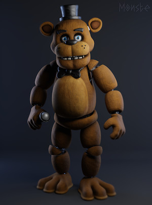
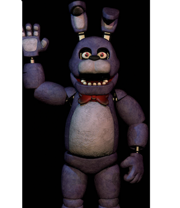
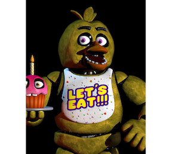

- Characters -
| Character | Freddy | Bonnie | Chica | Foxy |
|---|---|---|---|---|
| Picture |  |  |  |  |
| Description | In the books, Freddy is one of several animatronics who were created by a company called Silver Eyes Entertainment, and he serves as a mascot for a children's restaurant called Freddy Fazbear's Pizza Palace. Like in the video games, Freddy and his animatronic friends are programmed to entertain children during the day, but at night, they become aggressive and dangerous. However, in the books, the animatronics are not possessed by the spirits of murdered children, but rather by an artificial intelligence called Afton Robotics, which has gone rogue and is using the animatronics as weapons. Freddy is portrayed as a loyal and protective figure in the books, with a deep connection to the protagonist, a young girl named Charlie. Throughout the series, Freddy and his friends work alongside Charlie and her friends to defeat Afton Robotics and stop their evil plans. | Bonnie is an animatronic bunnie in the Five Nights at Freddy's books who serves as a member of the animatronic band at Freddy Fazbear's Pizza Palace. Like in the video games, Bonnie is programmed to entertain children during the day, but becomes aggressive and dangerous at night. In the books, Bonnie is also possessed by the rogue artificial intelligence, along with the other animatronics. | Chica is an animatronic chicken in the Five Nights at Freddy's books who serves as a member of the animatronic band at Freddy Fazbear's Pizza Palace. She is depicted as an outgoing and cheerful character who enjoys entertaining children. However, like the other animatronics, Chica is also controlled by the rogue artificial intelligence and is capable of being a dangerous threat to the human characters in the story. Despite this, Chica is shown to have moments of loyalty and protectiveness towards the protagonist, Charlie, and her friends. | Foxy is also an animatronic fox in the Five Nights at Freddy's books who also serves as a member of the animatronic band at Freddy Fazbear's Pizza Palace. Foxy is a fierce and aggressive character who is feared by both the human characters and the other animatronics. However, Foxy also has a more sympathetic side, as he is revealed to be one of the first animatronics created by the Silver Eyes Entertainment company and has a tragic backstory. In the books, Foxy is also possessed by the rogue artificial intelligence and becomes a deadly weapon, but he ultimately sacrifices himself to help defeat the evil forces controlling the animatronics. |
- Citations
https://freddy-fazbears-pizza.fandom.com/wiki/Freddy_Fazbear
https://freddy-fazbears-pizza.fandom.com/wiki/Chica
https://freddy-fazbears-pizza.fandom.com/wiki/Foxy
https://www.deviantart.com/t-freddy-fazbear/art/C4D-FNAF-Bonnie-The-Bunny-HW-843928357
https://www.pinterest.com/pin/998180704881108451/
https://aminoapps.com/c/fnaf-portugues/page/user/circus-baby/aava_YwTQfekXRzv2wRw71d05853Zwe7aL
https://wallpapercave.com/spring-trap-hd-wallpapers
https://www.pinterest.com/pin/711428072382395500/
https://wallpapercave.com/puppet-master-fnaf-wallpapers
https://wallpapercave.com/plushtrap-wallpapers
newwwwwwww https://www.artstation.com/artwork/G8EJQz